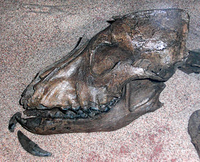

Собака— домашнее животное, одно из наиболее распространённых.Первоначально домашняя собака была выделена в отдельный биологический вид Линнеем в 1758 году, в 1993 году реклассифицирована Смитсоновским институтом и Американской ассоциацией териологов в подвид волка.

Ископаемые останки доисторических Canidae найдены в человеческих пещерах по всему миру.Ранее на основании археологических находок чаще всего учёными назывались даты одомашнивания собак 13—15 тыс. лет до н. э. Сейчас ряд исследователей считает, что собаку приручили ещё в начале верхнего палеолита представители ориньякской культуры.
Обычно считают, что первоначально собака служила человеку как сторожевое животное, но весьма скоро стала использоваться и на охоте. Именно охотничьи качества собаки, как считают антропологи,стали основным фактором её одомашнивания. Древние люди в борьбе за выживание искали наиболее совершенные методы добычи пищи.Гипотеза об использовании собак для повышения эффективности охоты древним человеком экспериментально была подтверждена в 2004 году финскими учёными.